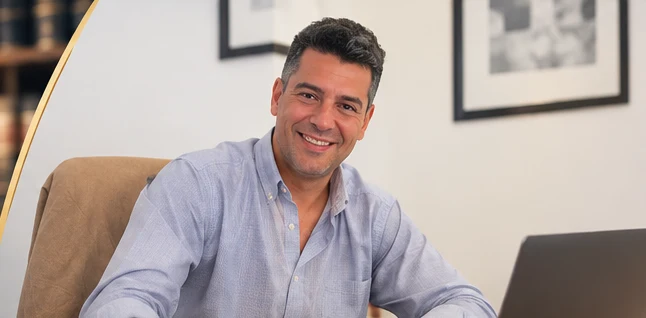

Choques de Autos y Camionetas
Reclamo por destrucción total o parcial, desvalorización del vehículo, privación de uso y lesiones físicas de conductores o acompañantes.
ATENCIÓN EN CABA Y TODO EL AMBA • GESTIÓN 100% DIGITAL
Reclamamos tu máxima indemnización por choques, lesiones y daños materiales. Iniciá tu trámite 100% online desde tu celular sin moverte de tu casa (o de forma presencial en nuestras oficinas). Solo cobramos si vos cobrás.
Evaluación inicial sin cargo Atención inmediata.

COBERTURA INTEGRAL
Reclamo por destrucción total o parcial, desvalorización del vehículo, privación de uso y lesiones físicas de conductores o acompañantes.
Defensa especializada ante siniestros con vehículos de mayor porte. Gestión integral de secuelas físicas, incapacidades y gastos médicos.
Reclamo directo contra el seguro del vehículo embistente. Cobertura de tratamientos, rehabilitación, daño moral y lucro cesante.
Indemnización por caídas, frenadas bruscas o colisiones viajando en colectivo, tren, remis o aplicaciones de viaje.
GESTIÓN ÁGIL Y SIN VUELTAS
Nos contás cómo fue el siniestro y nos enviás fotos de la documentación (licencia, cédula, denuncia administrativa y certificado médico) desde tu teléfono.
Nos encargamos de toda la negociación extrajudicial y las audiencias de mediación online ante las aseguradoras en CABA y Provincia.
Seguimos el expediente hasta que percibas el monto que te corresponde. Sin adelantos de honorarios ni gastos ocultos.
POR QUÉ ELEGIRNOS
Trabajamos a resultado. No tenés que desembolsar dinero para iniciar el reclamo contra la aseguradora.
Conocimiento profundo de los criterios de liquidación de las compañías de seguros y pericias médicas en Capital y Provincia.
Tratás directamente con el estudio, sin intermediarios ni gestores improvisados.
CONSULTANOS HOY
No firmes acuerdos rápidos ni aceptes ofertas bajas de la aseguradora sin asesorarte antes. Envianos los datos básicos de lo ocurrido y evaluamos la viabilidad de tu reclamo hoy mismo.
CONTACTO Y UBICACIÓN
Litigamos en todas las jurisdicciones de CABA y Provincia de Buenos Aires. Contamos con atención digital ágil para todo el AMBA (Zona Norte, Sur y Oeste) y oficinas físicas con turno previo en Castelar.
San Pedro 1070, Castelar, Provincia de Buenos Aires
Lunes a Viernes de 9:00 a 18:00 hs.
Atención presencial con turno previo.